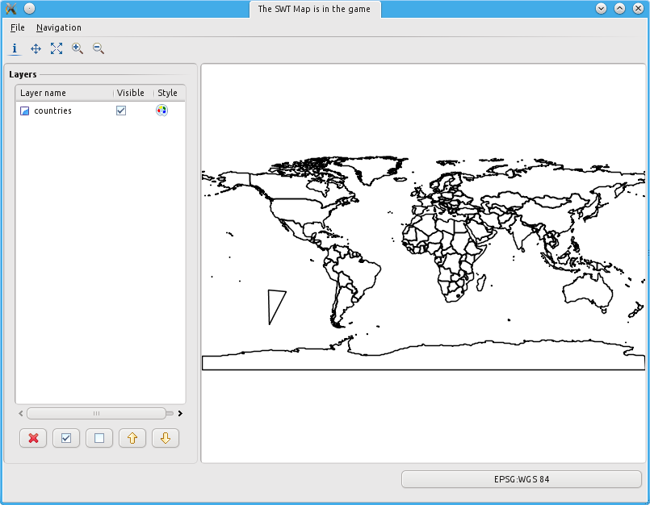

SWTMapFrame¶
The following is a tutorial that explains how to use the gt-swt module in standalone mode and inside an rcp environment. The tutorial assumes the user is already confident with geotools development/build and already an basic RCP developer.
Example¶
Using the standalone gt-swt module is fairly easy.
It is best explained with a code snippet:
public class Main { public static void main( String[] args ) throws Exception { // create a default mapcontext MapContext context = new DefaultMapContext(); // set the title context.setTitle("The SWT Map is in the game"); // add a shapefile if you like File shapeFile = new File("/home/moovida/data/world_adm0/countries.shp"); ShapefileDataStore store = new ShapefileDataStore(shapeFile.toURI().toURL()); SimpleFeatureSource featureSource = store.getFeatureSource(); SimpleFeatureCollection shapefile = featureSource.getFeatures(); context.addLayer(shapefile, null); // and show the map viewer SwtMapFrame.showMap(context); } }Which results in:
It is possible to tweak some of the window settings, like statusbar, layers panel and toolbars/menus. For this use we have to move beyond our call to SwtMapFrame.showMap(context)
The result is equally easy. Again a code snippet is the best way.
In the following case we decide that we want to get rid of the layers panel:
boolean showMenu = true; boolean showToolBar = true; boolean showStatusBar = true; boolean showLayerTable = false; final SwtMapFrame frame = new SwtMapFrame(showMenu, showToolBar, showStatusBar, showLayerTable, context); frame.setBlockOnOpen(true); frame.open();
Which results in: